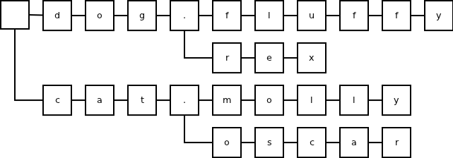
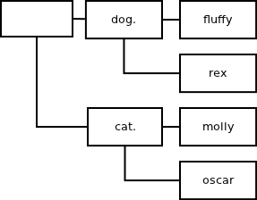
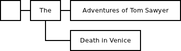
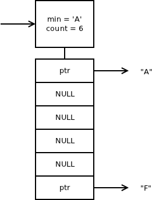
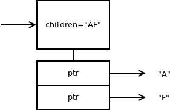

When I was writing ZeroMQ's subscription subsystem, my assumption was that there will be thousands or — in the worst case — tens of thousands subscriptions at any single time. The assumption reflected my background in financial services, where subscriptions are mostly used for subscribing for stock quotes. The topic you subscribe to is the name of the stock and there are, typically, some tens of thousands of those, even if you take into account derivatives like futures and options.
However, it turns out that there are different scenarios out there in the wild. Recently I've spoke to the users who use ZeroMQ to manage 100,000,000+ subscriptions. (Hi guys!) While the load cannot be handled by a single box and has to be divided between several of them, it is nice that the algorithm still works in the set-up that exceeds my original estimates by four orders of magnitude.
Thinking about such use cases raises two fundamental questions: First, is the subscription forwarding able to handle such subscription load and what happens when connection between publisher and subscriber breaks and re-establishes? Second, can we possibly store the subscriptions in a more memory-efficient way so that more subscriptions can be handled before running out of memory?
In this article I'm going to ignore the former question (it's a complex one and we don't have a perfect answer yet) and focus on the latter.
Memory footprint of storing the subscriptions is, of course, important to minimise the number of servers you need to handle large subscription sets. That in turn translates into lower cost, both in terms of capital and operational expenses.
However, even for small subscription sets (those that fit in a single box) minimising the memory footprint makes sense. Specifically, when the subscription set grows to the point where the OS starts to swap it onto the disk, the response time of your application is likely to increase as much as to become basically unusable.
In low latency environments the same argument applies to CPU caches: Once the subscription set grows beyond where it can be stored in the CPU cache, message filtering will have to access physical memory and fare with much higher latencies than before.
That being said, let's now look at how the subscription matching works in ZeroMQ and how it was improved in nanomsg.
In ZeroMQ, the structure used for storing subscriptions is a trie:

The inefficiency of the format is obvious: If the subscriptions are composed from elements longer than one character (such as English words, stock codes etc.) allocating a trie node for each character is extremely wasteful.
To improve the memory footprint, nanomsg uses patricia trie instead:

By storing strings at individual nodes, rather than single characters, we can minimise the amount of nodes needed to store a subscription set. In the example above the number of nodes dropped from 28 (simple trie) to 7 (patricia trie), i.e. to mere 25%!
In the scenarios where subscriptions tend to be long, the terminal branches of the trie are often rather long. Switching to patricia trie in such case reduces the number of allocated nodes to 10% or even less:

While patricia trie works great for reducing the number of nodes in the trie, there's another metric that effects the memory footprint, namely the size of the node structure itself.
ZeroMQ allocates a fixed size data structure for each node and if (and only if) the node has more than one child it allocates a table of pointers to the children. The table is indexed by the character the child represents. The following diagram shows the representation of subscriptions "A" and "F":

As can be seen, the format is optimised in such a way that it's not necessary to allocate an array of 256 pointers, one for each possible subsequent character (that would mean as much as 2kB of memory per node!), instead is allocates an array that starts with the lowest existing character and ending with the highest existing subsequent character. While this optimisation saves a lot of space, it is not perfect. For example, if the two subscriptions were "A" and "z" the pointers would occupy 0.5kB.
To mitigate this problem, nanomsg introduces two different types of nodes. There's a "dense" node (used for nodes with 9+ children) which is basically the same as the node in ZeroMQ; and there's a "sparse" node (used for nodes with 1-8 children) that gets rid of all the NULL pointers:

This way, subscribing for both "A" and "z" would need only 16 bytes for storing the child pointers (instead of 464 in ZeroMQ).
The main idea is that memory-greedy "dense" nodes (up to 2kB per node) are relatively rare with typical subscription sets (<1%) and most of the trie consists of "sparse" nodes (up to 64 bytes per node).
Finally, it should be said that pointer table is allocated in one block with the node itself, while in ZeroMQ the two are allocated separately. This is a minor optimisation, but it speeds up some scenarios. Also, memory footprint is slightly better given that there's just one chunk header per node rather than two of them. Also, memory fragmentation tends to be less atrocious when number of allocated chunks drops by 50%.
The little testing I've done with the new algorithm shows that for typical subscription set it reduces the memory usage below 10% of what ZeroMQ uses.
Of course, if you've run tests of your own it would be great if you can share the results!
March 9th, 2013